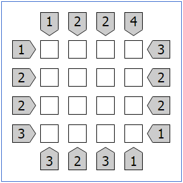

Meus Projetos
Sites
Desenvolvimento de sites profissionais e landing pages para diversos clientes. Criação de plataformas responsivas e otimizadas com WordPress, focadas em experiência do usuário e performance
HTML5
CSS3
JavaScript
WordPress


Funções em C
Recriação de funções fundamentais da biblioteca padrão C durante o processo seletivo da 42 SP. Implementação de putstring, putchar e outras funções essenciais, demonstrando domínio de manipulação de memória e algoritmos de baixo nível.
C
GitHub
42SP